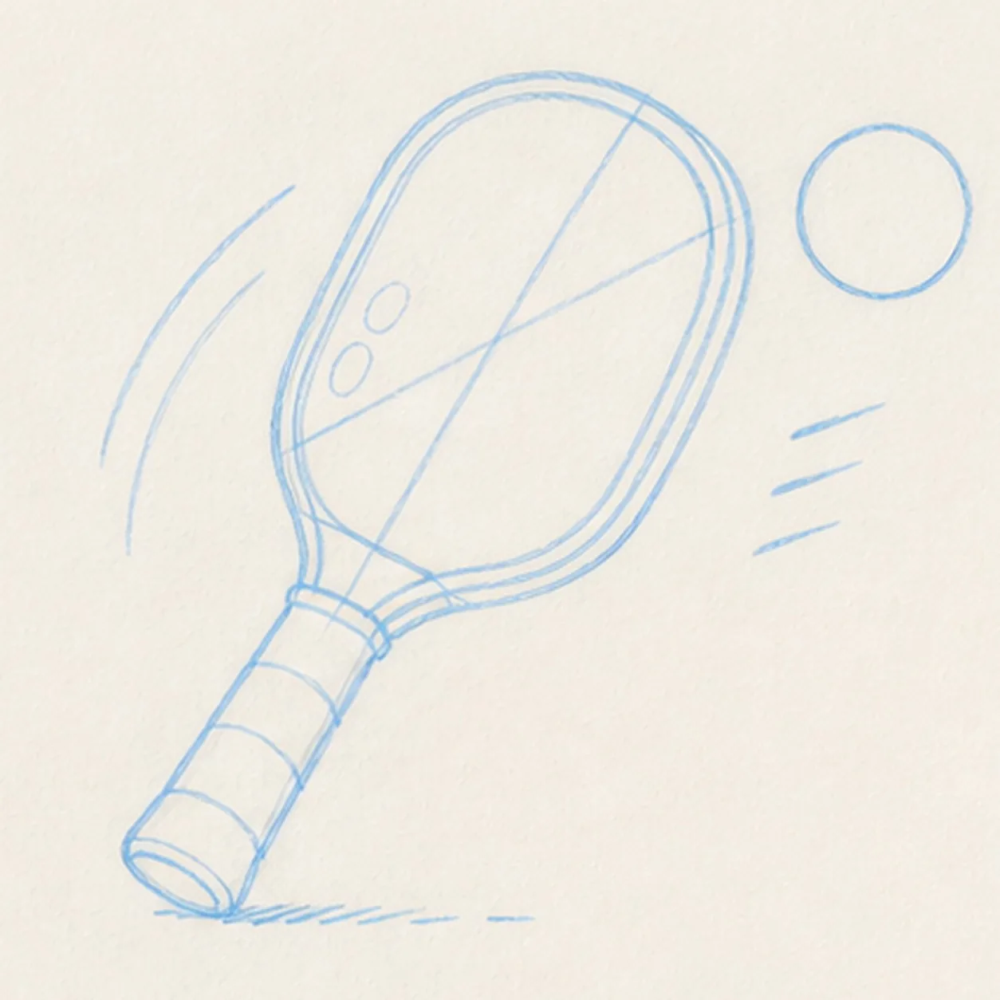
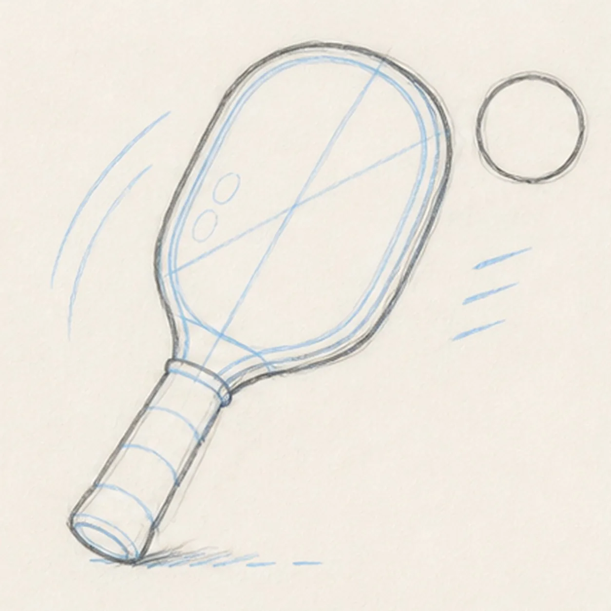
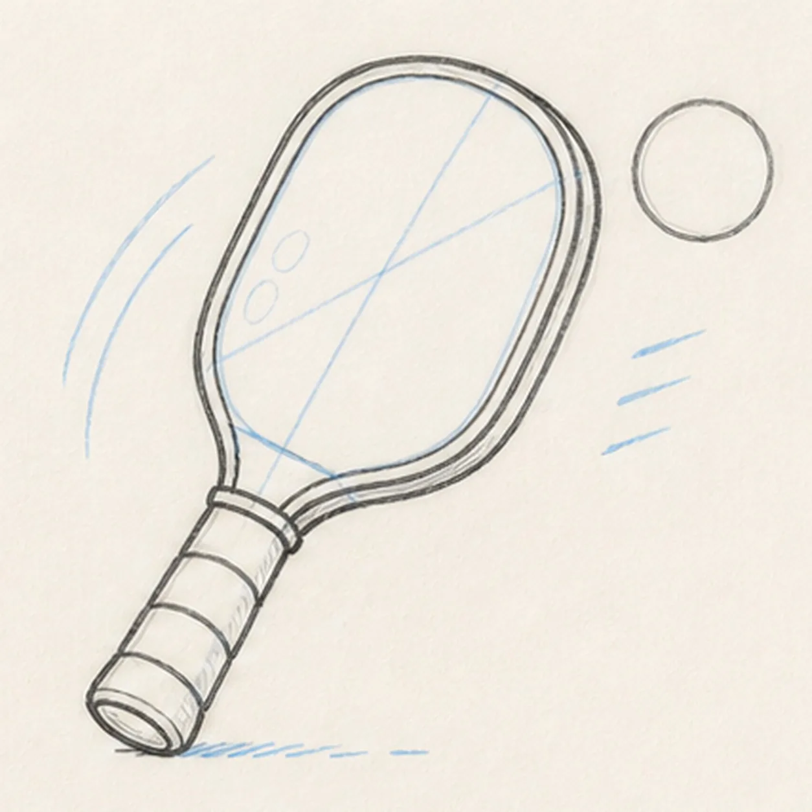
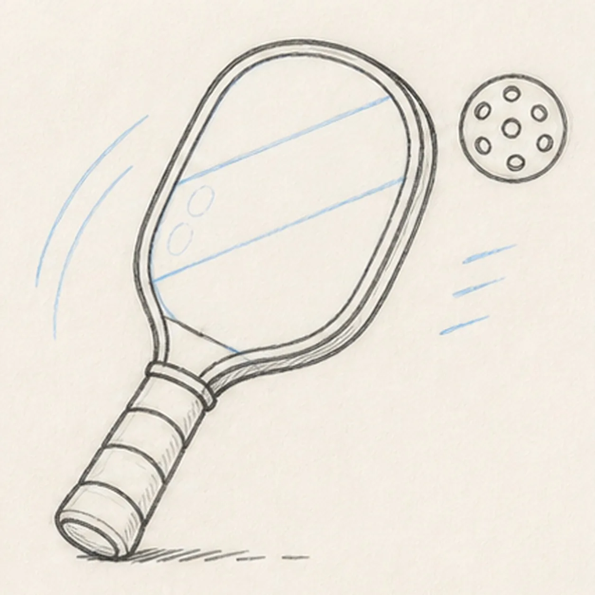
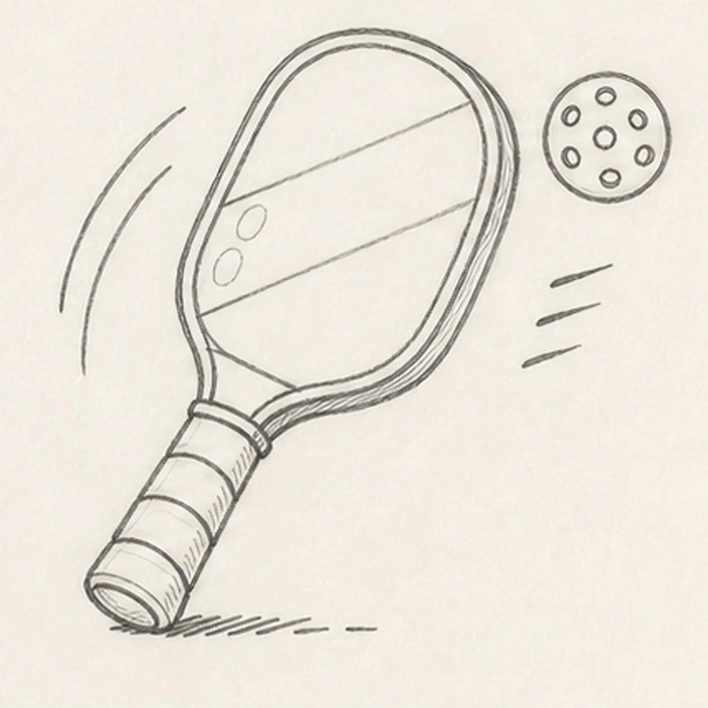
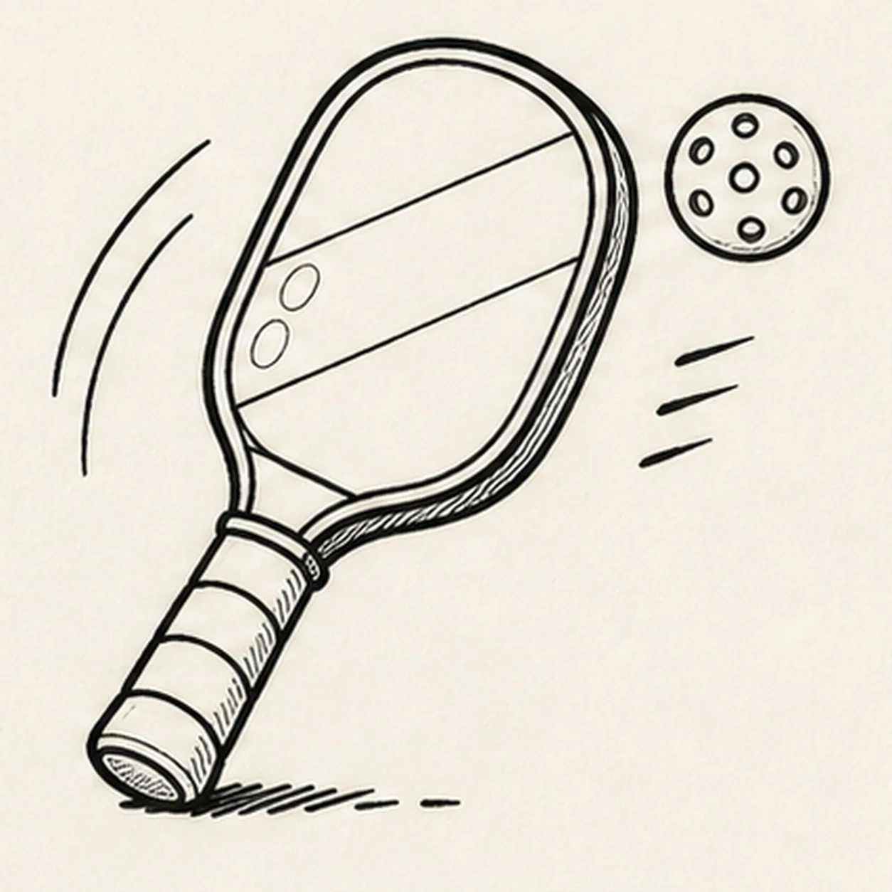
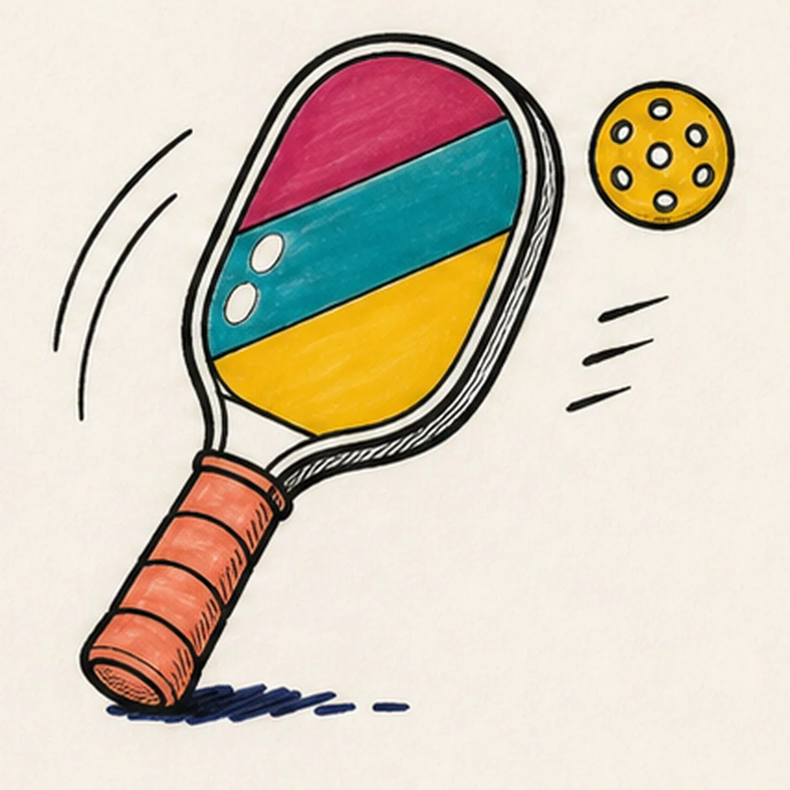

Felt-tip marker mode
Let's draw a pickleball paddle and ball in motion
Treat this as one playful practice round: sketch the idea loosely, simplify the shapes, then commit with confident marker outlines and bright fills.
-
01

Map the quick volley
Use pale construction to place the diagonal paddle face, doubled-rim guide, neck, tapered handle, blank ball circle, exactly three grip-band routes, exactly two face-color routes, two swing arcs, three speed dashes, two paddle-face highlights, and one broken shadow footprint.
Marker tip: Ghost the paddle oval and its long center axis before touching down, then compare the handle length with the face. Keep the ball blank for now, and reserve the motion marks and highlights so no later line has to cut through the paddle or ball.
-
02

Wrap the paddle silhouette
Add a loose contour for one thick oval paddle, one short neck, one tapered handle, and one separate blank ball while preserving every grip, pattern, motion, highlight, and shadow route.
Marker tip: Rotate the page and pull each long paddle edge in one relaxed pass. Keep the neck centered on the oval and match the paper gap around the ball so the action angle does not drift.
-
03

Fit the rim and grip
Clarify the doubled paddle rim, neck attachment, small handle end cap, exactly three curved grip bands, and the ball contour without adding holes, black ink, or color.
Marker tip: Echo the outer oval with a narrow inner rim instead of redrawing a separate shape. Wrap all three grip bands around the same handle taper and stop each band cleanly at the handle edges.
-
04

Divide the face and ball
Add exactly two diagonal routes across the paddle face and exactly seven unfilled round holes inside the established ball while keeping the silhouette and grip unchanged.
Marker tip: Pull both diagonal routes parallel enough to create one broad center block, then place the ball's center hole first and space six around it. Count all seven before darkening any circle.
-
05

Kick up the volley motion
Add two curved paddle-swing arcs, exactly three short ball-speed dashes, two open-paper oval highlights on the paddle face, and the established broken shadow.
Marker tip: Ghost the two long arcs beside the paddle before drawing them and keep all three short dashes beside the ball. Leave open paper between every motion mark and the subject silhouettes so the action remains crisp.
-
06

Ink the court-ready lines
Trace only the established paddle, rim, neck, three grip bands, two face routes, ball, seven holes, motion marks, highlights, and shadow with thick, slightly wobbly black felt-tip, then add restrained grip and rim hatching.
Marker tip: Ink the seven small holes and grip bands first, let them dry, then rotate the page for the large oval. Give the outside silhouette the heaviest line and keep the inner rim and hatching lighter.
-
07

Fill the bright court color
Fill the three paddle blocks raspberry, teal, and mustard, the grip coral, the ball mustard around all seven holes, and the broken shadow deep navy while preserving both paper highlights and visible marker streaks.
Marker tip: Pull the paddle strokes along each diagonal block and the grip strokes around the handle. Let neighboring fills dry before they touch, and color around every hole and highlight instead of painting over the reserved paper.
-
08
![Handmade face-free felt-tip marker drawing of one diagonal pickleball paddle with one thick oval face divided into raspberry, teal, and mustard color blocks by exactly two diagonal routes, one doubled black rim, one short neck, one coral handle with exactly three curved grip bands and a small end cap, one mustard pickleball at upper right with exactly seven visible open holes, two black paddle-swing arcs, exactly three black ball-speed dashes, two open-paper oval highlights on the paddle face, thick imperfect black outlines, visible marker streaks, and one broken deep-navy shadow beneath the handle](../assets/pickleball-paddle-and-ball-in-motion-finished-v1.webp)
Snap the pickleball finish
Thicken selected established black edges, even the same marker fills, clarify both paddle highlights, and deepen only the existing grip hatching and broken shadow.
Marker tip: Count one paddle, one ball, three grip bands, two face routes, seven holes, two swing arcs, three speed dashes, two highlights, and one shadow before stopping. Change the paddle palette if you like, but keep the face-free action and handmade marker grain.

![Handmade felt-tip marker drawing of one face-free upright cartoon hourglass with exactly two rounded teal caps, exactly two attached coral side pillars, one pale-aqua pinched glass vessel, one curved upper golden-yellow sand bed, one centered falling sand stream, one rounded lower sand pile, exactly two open-paper glass highlights, exactly three yellow four-point sparkles, exactly four deep-navy cap notches, thick imperfect black outlines, visible directional marker texture, and one broken deep-navy ground shadow](../assets/cartoon-hourglass-with-flowing-sand-finished-v1.webp)
![Handmade felt-tip marker drawing of one face-free upright teal cartoon walkie-talkie leaning slightly right with one top-left antenna, exactly two coral top knobs, one attached coral push-to-talk button on the upper-left side, one blank pale-aqua rounded screen with a dark bezel, exactly five horizontal deep-navy speaker slots, exactly two yellow radio-wave arcs above the antenna, exactly two open-paper case highlights, exactly four lower grip ribs arranged two per side, thick imperfect black outlines, visible directional marker texture, and one broken deep-navy ground shadow](../assets/cartoon-walkie-talkie-finished-v1.webp)